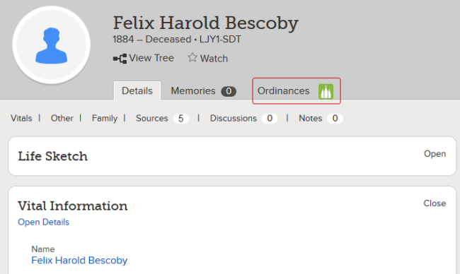
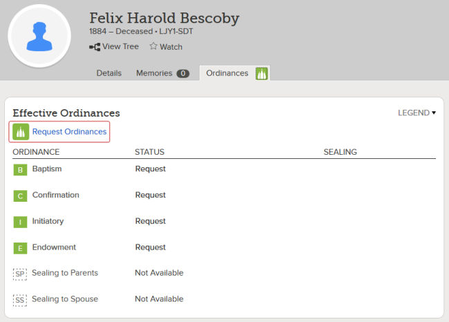
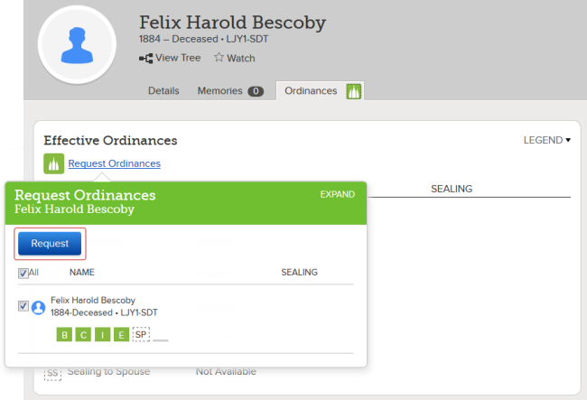
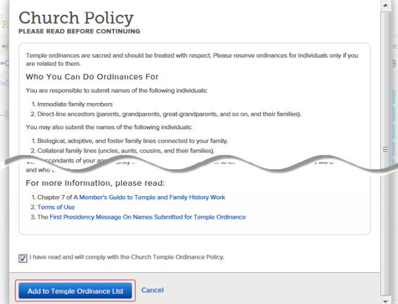
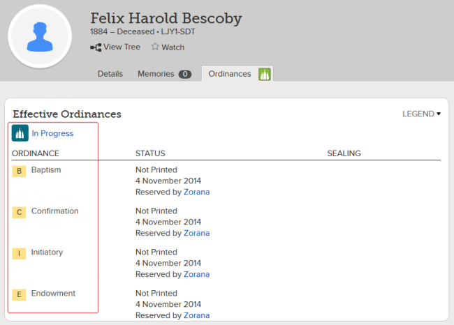

Reserve Names for Temple Work
Need good quote here
Because temple ordinances are sacred, you’ll want to be prayerful and listen to the promptings of the Spirit as you follow the steps below.
Note: These procedures assume you are related to the person whose ordinances you want to reserve.
Click to hide all images.Click to show all images.
You can begin the process of reserving temple ordinances on pages where you see a green temple icon:
- The Person page
- Tree View (Landscape or Portrait)
- Descendancy View
For this example, we'll start on the Person page.
- On the Person page of the individual whose ordinances , click the Ordinances tab.

- Click Request Ordinances.

- Click Request.

- Carefully read the Church Policy, and indicate that you are following it by selecting the check box near the bottom of the page. Then click Add to Temple Ordinance List.

Notice that the ordinance status has changed from Ready to In Progress, and the ordinance icons below have changed from green to yellow. To see what all the icon colors mean, click Legend in the upper right corner.

After you've reserved a name, the final step is to print the Family Ordinance Request (FOR) to take to the temple.